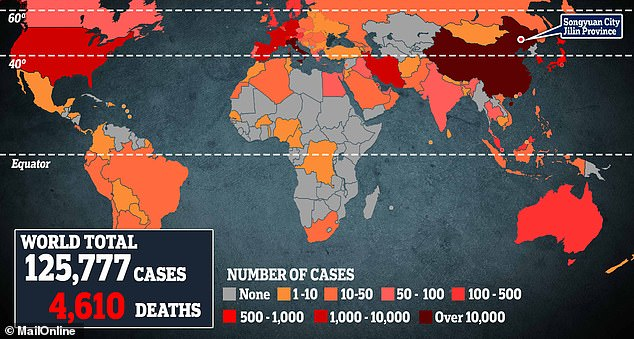
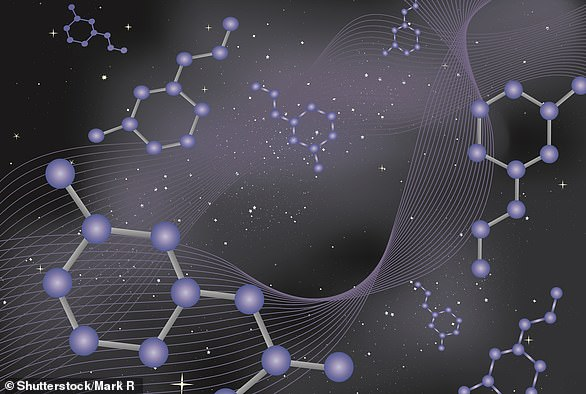
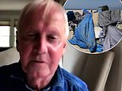
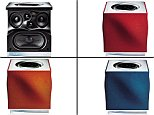

Scientist who claims coronavirus came from SPACE by meteor says prevailing winds are spreading the disease to the hardest-hit countries
A scientist who believes coronavirus came from space by meteor now says prevailing winds are spreading the disease to the hardest-hit countries.
Professor Chandra Wickramasinghe of the Buckingham Centre for Astrobiology has alleged that the meteor that exploded over China in October released viral particles.
Once in the upper stratosphere, the virus either fell to Earth or got caught up in the stratospheric air currents that circle the Earth, he told MailOnline.
From here, the virus has spread along 'a global band of between 40–60° latitude north', with all the 'main strong cases' appearing 'exactly along that range', he said.
Infectious disease experts have debunked Professor Wickramasinghe's claim, however, noting that COVID-19 is similar to other known coronaviruses.
This, they explained, would suggest that it was also transmitted to humans from animals — not from a recent meteorite fall.
Scroll down for video
The scientist who claimed that coronavirus came from space by meteor has said that prevailing winds are spreading the disease to the hardest-hit countries.Pictured, the fireball caused by a meteor burning up in the Earth's atmosphere above China on October 11, 2019
The virus has spread by the prevailing winds along 'a global band of between 40–60° latitude north', with all the 'main strong cases' appearing 'exactly along that range', Professor Wickramasinghe said.Experts have dismissed the claim that the virus could be spread by the air — noting that, even if it did, it would thin out travelling international distances
'The sudden outbreak of a new coronavirus is very likely to have a space connection,' Professor Wickramasinghe told The Express in February.
The astrobiologist is a proponent of 'panspermia' — the theory that life is seeded across the universe by travelling on meteors, comets and space dust.
A meteor was seen as a blazing, bright fireball flying across the sky in the north-east of the country at around 12:16 am on October 11, 2019.
The space rock — which reportedly shone so brightly that it made the night sky look light day — is thought to have disintegrated in the atmosphere.
'We consider the seemingly outrageous possibility that hundreds of trillions of infective viral particles were then released embedded in the form of fine carbonaceous dust,' he added.
In support of the theory, he highlighted the 'remarkable aspect' that the coronavirus outbreak occurred in the same region of China as where the fireball was seen.
He added that he thinks that the meteor 'contained, embedded within it, a monoculture of infective 2019-nCoV virus particles that survived in the interior of the incandescent meteor.'
'We believe infectious agents are prevalent in space, carried on comets, and can fall towards Earth through the troposphere.These, we think, can and have in the past gone on to bring about human disease epidemics.'
The MailOnline asked Professor Wickramasinghe whether the correlation of a single meteor sighting with a virus outbreak proved that the former caused the latter.
'It's an interesting connection to take note of, I suppose, but it certainly doesn't prove that that's the way that it took place necessarily,' Professor Wickramasinghe admitted.
The scientific community, however, has largely dismissed Professor Wickramasinghe's claims.
'The most compelling evidence that SARS-CoV-2 didn’t come from a meteorite is that it is so closely related to other known coronaviruses,' infectious disease specialist Dominic Sparkes of University College London told IFLScience.
'It’s closely related to the SARS (severe acute respiratory syndrome) virus that caused an outbreak in the early 2000s and the MERS (Middle Eastern respiratory syndrome) virus which still causes disease currently,' he added.
'SARS was found to be the result of bats transferring virus to civet cats which transferred on to humans, while MERS is known to be passed on to humans from camels.'
'It therefore is far less of a leap to assume the closely-related SARS-CoV-2 virus has been passed on to humans in the same way.'
Professor Wickramasinghe, however, has dismissed these arguments, suggesting that the similarity of the coronavirus sequences in humans and animals like bat is 'highly questionable' and is 'being re-analysed' — and that even if they were similar, this would not disprove the suggestion that the virus came from space.
Experts have also previously noted that coronavirus is not being spread by the wind.
'Even if the virus could be spread by air, it would be thinned largely to the extent that people could ignore it after it had travelled a few kilometres,' meteorologist Lam Chiu-ying said last month.
'Don’t believe it, preventing the local spread of the virus is the most important thing.'
COVID-19 only survives for 72 hours on surfaces and the US Centre for Disease Control has said that six feet is a safe distance to avoid person-to-person infection.
'Viruses from space is an old chestnut that deserves to be roasted immediately,' said virologist Ian Jones of the University of Reading.
'The sequence of the Wuhan virus is very close to those previously observed in bats.'
'In contrast to the authors’ statement transmission among people is clear, as in the recent Brighton cases, and the epidemiology modelling clearly tracks back to the Wuhan seafood market in December last year.'
'The trouble with this sort of nonsense is that it detracts from the really detailed work that is currently ongoing to track, cope with and prevent infection.'
What the virus really demonstrates is the troublesome side of evolution, everything jostling to gain a toehold somewhere.Getting ahead of it needs a range of dedicated programs, not this sort of guff.'
Professor Wickramasinghe — along with his colleague Sir Fred Hoyle of the University of Cambridge — has been a leading proponent of the panspermia hypothesis since the mid 1970s.
'The earth is not a disconnected entity in the biosphere — we are connected to the external universe,' Professor Wickramasinghe said.
In the eighties, he proved that some of the dust found in interstellar space contained organic material, most of which was carbon.
Together with Sir Hoyle, he further contended that lifeforms and genetic material continue to enter the Earth's atmosphere to account for new diseases, epidemic outbreaks and the creation of the genetic novelty needed for major-scale evolution.
Professor Wickramasinghe has previously suggested that other deadly diseases came from an extraterrestrial source — including the 1918 flu pandemic, certain strains of mad cow disease and polio, and SARS, which he connected to a 2002 meteorite that exploded over the border of China and Russia.
'There is growing evidence that says this DNA comes from space and it is carried into our atmosphere on micro-meteorites before dissipating,' he told The Express.
Panspermia is a theory that suggests life spreads across the known physical universe, hitchhiking on comets or meteorites.
Extremophiles, capable of surviving the inhospitable conditions of space, could become trapped in debris that is ejected into space after collisions between asteroids and planets that harbour life.
These dormant life-forms may then travel for an extended amount of time before colliding randomly with other planets.
One argument that supports the panspermia theory is the emergence of life soon after the heavy bombardment period of earth, between 4 and 3.8 billion years ago.
During this period, researchers believe the Earth endured an extended and very powerful series of meteor showers.
However, the earliest evidence for life on Earth suggests it was present some 3.83 billion years ago, overlapping with this bombardment phase.
These observations suggest that living things during this period would have faced extinction, contributing to the idea that life did not originate on Earth.
The idea of directed panspermia suggests lifeforms were deliberately sent out through the universe by intelligent civilisations.
Professor Francis Crick, one of the biologists who discovered the structure of DNA, examined the possibility of this in a paper in 1973.
However, Professor Crick and his colleagues concluded that the scientific evidence was 'inadequate at the present time to say anything about the probability'.
Advertisement
Posted On: 2020-03-12T15:02:00
Posted By: Ian Randall For Mailonline








Content Date: 2020-03-12
Download Date: 2021-05-13
Document ID: L0C04C3A0